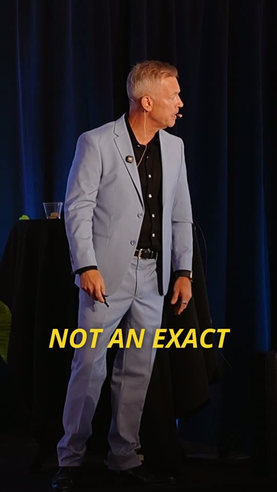
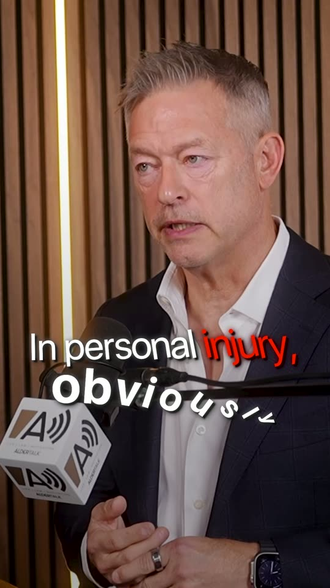
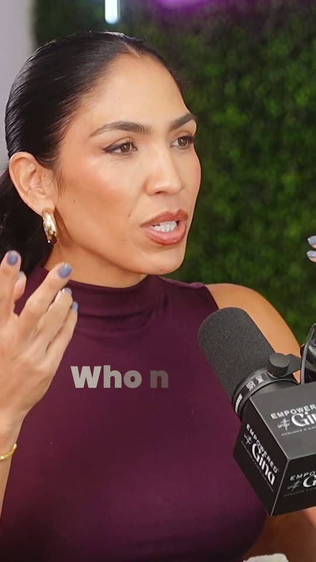
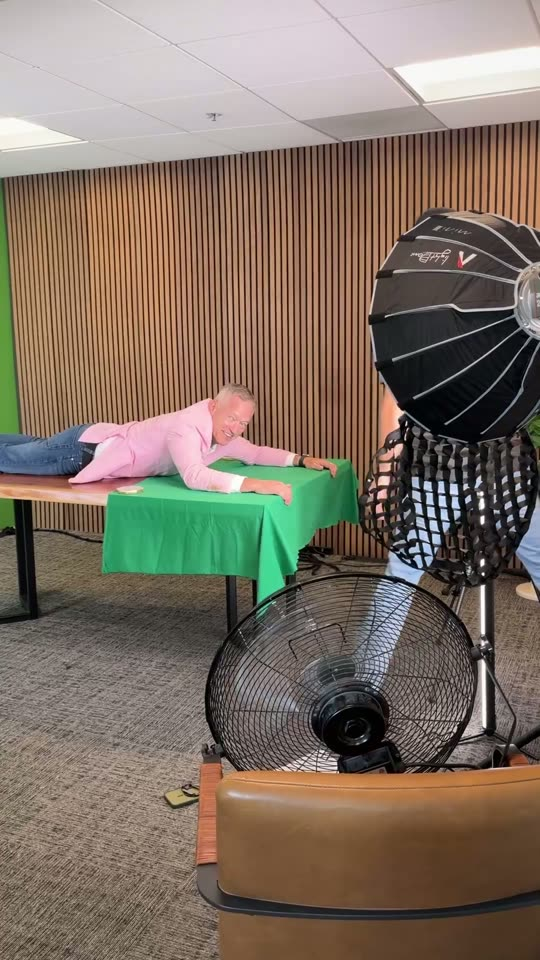

Production Media
The ads for your business should be made for your business.
We shoot the creative and run the campaign, under one roof, for established service businesses. One team accountable for the whole thing instead of a video company, a media buyer, and nobody joining them up.
A short form about your business first, then a call. We will tell you what we would do, roughly what it costs, and whether it is worth doing.
On location, at a client's office. The creative is shot for the campaign it will run in.
What you're actually buying.
Production days at your business
We come to you. Directed setups with your people on camera, shot for the placements the campaign will use.
Campaign creative, not repurposed clips
Ads built as ads, with hook variations, rather than a brand film cut down and hoped over.
The campaign, run by us
Build, launch and ongoing management on Meta, with the creative changing in response to what the numbers show.
A monthly read you can act on
What ran, what it cost, what it produced, and what we are changing next month. In writing.
How the engagement works.
The call
Thirty minutes on what you sell, what a customer is worth, and what you have already tried. If we are not the right studio, you hear that on the call.
Scope and benchmark
We agree the production volume, the fee, and the one performance benchmark the work will be measured against, before anything is shot.
Shoot, launch, adjust
Production, campaign build, then a monthly cycle of new creative against what is working. Three-month minimum, because two months cannot tell either of us anything.
Who this is for.
This fits
- Established legal, dental, health and wellness, or construction and contracting businesses
- A service already selling, with capacity to take on more customers
- Someone who answers an enquiry the day it arrives
- Willingness to fund advertising alongside the production
This does not
- A one-off video with no campaign behind it
- Anyone who needs a guaranteed number of leads. We do not sell those
- Businesses without the capacity to serve more customers yet
- Restaurants and cafés, where the margin rarely survives paid acquisition
The questions everyone asks.
What does it cost?
Engagements generally begin in the mid four figures monthly, scaled to production volume and how much of the campaign we run. Your advertising spend is separate, paid by you directly to the platform on your own account, and never marked up or held by us. Exact scope and fee are quoted after the call, once we know what we would actually be doing.
We already make content.
Good. The question is whether it has a job. Posting means an algorithm decides who sees it. Creative built around a clear offer, with money behind whatever wins, is a different instrument. Often the same footage, doing different work.
Why a three-month minimum?
Month one is production and launch. Month two is the first honest read. Month three is acting on it. Two months is a shoot and a shrug, and we would rather turn the work down than sell you a quarter that cannot answer its own question.
Can you guarantee results?
No, and nobody honest can on a first campaign. We are not promising revenue, a number of leads, a cost per lead, or a return. What we promise is below, and it is a promise about our work.
Selected work.
Brand and organic work for clients. Shown for craft and range; these are not paid-campaign performance figures.




The 90-Day Production Promise
If, after 90 consecutive days, the campaign has not improved the primary performance benchmark we agree upon during onboarding, the next standard production cycle is on us.
One benchmark, chosen with you and written into the scope before launch, with its baseline and measurement source recorded at the same time. It has to be measurable: qualified cost per lead, qualified-lead rate, landing-page conversion rate, click-through rate, or another measure we both agree on. Total views does not qualify by default.
It applies only to engagements where we manage both the campaign and the creative. On production-only work we are not in a position to move the benchmark, so promising to would not be something we could honour. Which you are in is settled when we scope the work, before anything is signed.
It also requires that the agreed ad spend was maintained, tracking stayed operational, the campaign ran the full period, and the offer and targeting were not changed underneath the measurement. The remedy is one standard production cycle matching your contracted monthly allocation, up to a value named in the agreement, with one revision round. It excludes ad spend, management fees, talent, travel, locations, permits and third-party costs. It is a service credit, not a refund, and it cannot be combined with a waived first month.
This is a promise about our work, not about your revenue. No guarantee of revenue, leads, cost per lead, or advertising performance is offered. Full terms are provided before anything is signed.
Thirty minutes, and a straight answer.
A few questions about your business first, so the call is useful rather than spent catching up. If we are not the right people for this, you will hear it on the call instead of in a proposal a week later.
Engagements generally begin in the mid four figures monthly. Advertising spend is separate and paid by you.